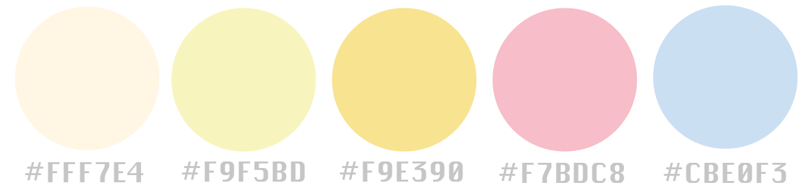
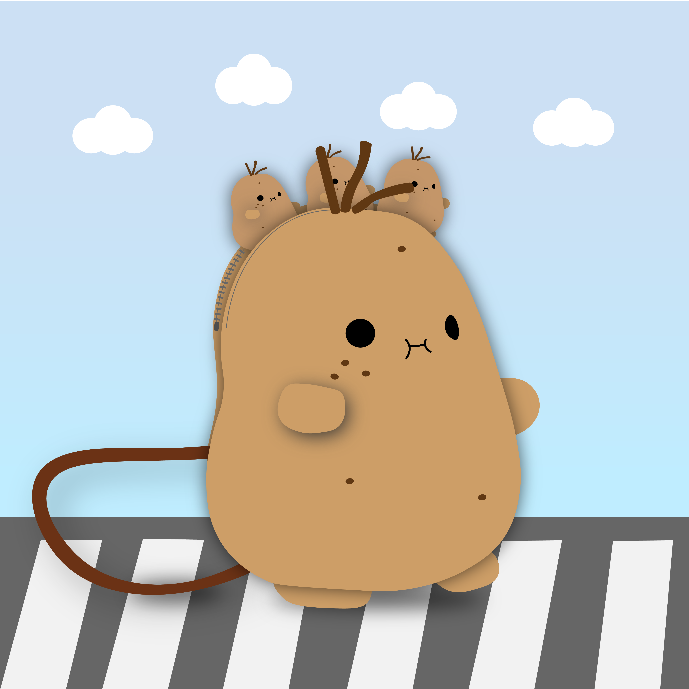

🥔 Design Brief: Please create an accessory design inspired by a Noodoll character- choose any character and incorporate its design elements into your accessory concept. Present your idea in a creative way, and feel free to explore fresh ideas that align with our fun and playful style.
🥔 Tools: Adobe Illustrator, PhotoShop
🥔 This page highlights my expertise in visual identity across digital and accessories design.
🥔 Colour Chosen 🥔
Image source: Noodoll
🥔 Design Inspiration 🥔
A Walking Potato - Among many charming Noodoll characters, Ricespud stood out to me the most. While exploring the Accessories section on the Noodoll website, I thought having a bag that could hold multiple cute characters at once would be wonderful.
Since accessories are typically small, I envisioned a compact cross-shoulder bag. Drawing inspiration from Ricespud, I designed a versatile, gender-inclusive bag suitable for all ages. For adults, it's the perfect size for an iPhone, while kids can use it to carry even more of their favourite toys.
🥔 Below are my design concepts 🥔
1. For bringing food to life with personality and charm.
2. Convey the bag’s size, portability, and practicality while also showcasing a walking potato character.
3. Noodoll designs are gender-neutral. In the image, I aim to showcase how the crossbody bag looks when worn by a real person.

4. Caption: "Don’t worry, little ones! I’ll carry you all the way."
Highlighting the bag’s strength, durability, and commitment to quality and sustainability.
